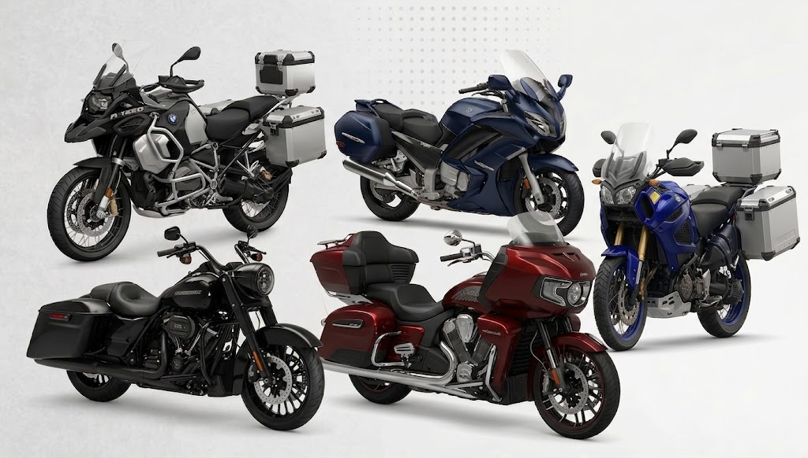
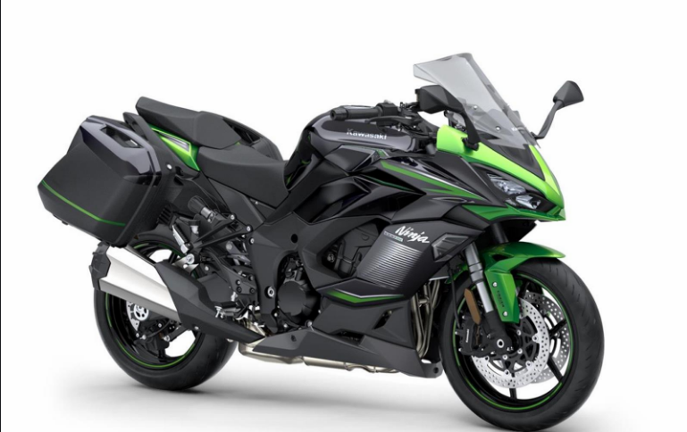
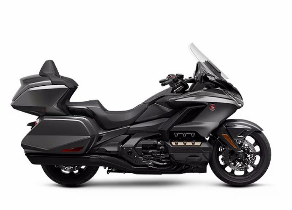
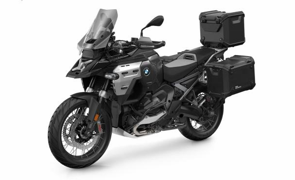
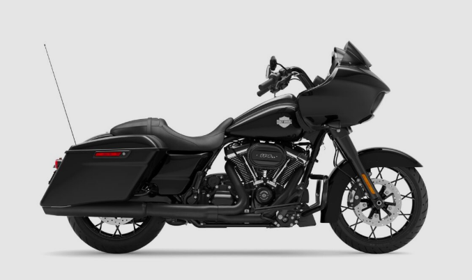

¿Qué es una moto para Viajes / Ruta?
Las motos para viajes y ruta están diseñadas para recorrer largas distancias, ofreciendo comodidad y estabilidad durante trayectos prolongados. Son ideales para viajar por rutas y carreteras, tanto solos como acompañados.

¿Por qué elegir una moto para Viajes / Ruta?
Si tu objetivo es recorrer largas distancias y disfrutar de viajes por carretera, una moto de ruta puede ofrecer mayor comodidad, estabilidad y capacidad para transportar equipaje que una moto pensada exclusivamente para uso urbano.
Características principales
🪑 Comodidad. Están diseñadas para que el conductor pueda pasar varias horas sobre la moto sin resultar demasiado incómodo.
⛽ Buena autonomía. Suelen contar con depósitos de combustible que permiten recorrer grandes distancias sin tener que detenerse constantemente.
🛣️ Estabilidad. Ofrecen buena estabilidad a velocidades de carretera, especialmente en viajes largos.
🧳 Capacidad de carga. Muchos modelos permiten colocar baúles, maletas laterales u otros accesorios para transportar equipaje.
👤 ¿Para quién es recomendable?
Este tipo de moto es recomendable para personas que disfrutan viajar, recorrer largas distancias y conocer nuevos lugares en motocicleta.
- 🏍️ Personas que realizan viajes largos.
- 🗺️ Viajeros y aventureros.
- 🛣️ Personas que circulan frecuentemente por rutas.
- 🧳 Personas que necesitan transportar equipaje.
Ejemplos de motos de Viajes y Ruta
Kawasaki Ninja 1000SX – Sport Touring - Combina prestaciones deportivas con comodidad para viajes largos.

Honda Gold Wing – Touring - Diseñada específicamente para realizar viajes largos con mucho confort.

BMW R 1300 GS – Adventure / Trail - Pensada para viajes de larga distancia tanto por asfalto como por caminos de tierra.

Harley-Davidson Road Glide – Cruiser - Orientada a recorrer largas distancias ofreciendo una posición de conducción relajada.
